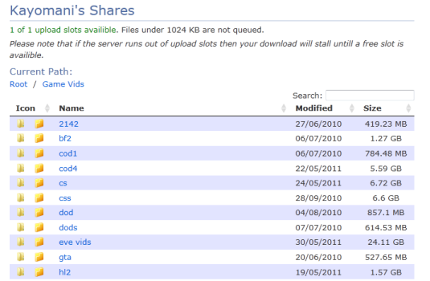

Quick start guide
Also known as how to FAP in 30 seconds.. (This guide is shown only once)
The purpose of this guide is to point out the features of the FAP client which are not immediately obvious.
If you are new to FAP then you'll want to hit settings and enter a username and avatar then then go on Shares
and share some folders.
The FAP protocol is auto organising and servers are created as needed, you can set your preference to be server on the settings screen.
The top of the client displays statistics on your client and the network as a whole accurate to within 15 seconds.
Main window
The client will find all other clients on the local network automatically and list them. The network will automatically scan clients for a HTTP web server, FTP server or have any accessible windows file shares (The image to the right shows detection of all three). You can sort the client list by selecting an item from the sort menu.
 Fast full network file search. Note results are limited to 10,000 per remote client and only every 10 seconds.
Fast full network file search. Note results are limited to 10,000 per remote client and only every 10 seconds. Download queue - Right click items in the queue to reorder them.
Download queue - Right click items in the queue to reorder them. Shares - Add/Remove your shared folders here.
Shares - Add/Remove your shared folders here. Compare - Compare specification of each client and get a overall system score.
Compare - Compare specification of each client and get a overall system score. Settings - Set your Username, Upload limit and download folder among other items.
Settings - Set your Username, Upload limit and download folder among other items.Web share
Shared folders of each client are also accessible via web browser, you can access a client via web browser by clicking View web share. You can either download the file you need via your web browser or by clicking the FAP icon you can download the file/folder via FAP. Downloading files via FAP has the advantage that you can see the queue status.
